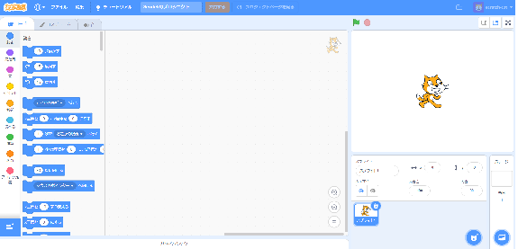
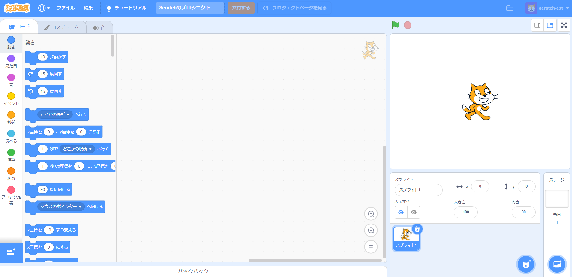

Scratch Extension
[説明]
子供用のプログラミング用ソフト「スクラッチ(Scratc)」があります。
そのソフト用のプログラムを作ってみました。(笑)
通常は、ゲーム用のプログラムがほとんどですが、 標準機能だけでなく、拡張機能という独自の機能も追加できるとあったので、
子供の名前のQRコードを作るというプログラムを作ってみました。
ひらがながメインですが、漢字でも出来ます。 お孫さんとか学生さんが居る方はちょっと使ってみてください。
そのソフト用のプログラムを作ってみました。(笑)
通常は、ゲーム用のプログラムがほとんどですが、 標準機能だけでなく、拡張機能という独自の機能も追加できるとあったので、
子供の名前のQRコードを作るというプログラムを作ってみました。
ひらがながメインですが、漢字でも出来ます。 お孫さんとか学生さんが居る方はちょっと使ってみてください。
[使い方]
（１）まず下記のプログラム(*.sb3)ファイルをダウンロードしてください。
createqr.sb3のダウンロード （リンクをクリックするとダウンロードできます。）
（２）下記URLを開いてください
Scratchソフト：https://yoshimitsuh1.github.io/scratch-gui/
下記のようにしてファイルを呼び出す
（４）呼び出したファイルを実行する
（５）作成されたQRコード
createqr.sb3のダウンロード （リンクをクリックするとダウンロードできます。）
（２）下記URLを開いてください
Scratchソフト：https://yoshimitsuh1.github.io/scratch-gui/
開いたところ：

（３）ダウンロードしたファイルを呼び出す
下記のようにしてファイルを呼び出す
呼び出し方

（４）呼び出したファイルを実行する
下記のようになまえを入れて「旗が押されたとき」を
クリックする
クリックする
この上の絵が見つからない場合は、中央の画面部分をドラッグして探してください
（５）作成されたQRコード
QRコードが作成された
このQRコードをスマホのソフトで読み込んでみるとなまえが表示されます。
htmlのデザインセンスが無いので、無機質な画面ですが、それは勘弁してください。
また、何か、作ってほしいというプログラムがあれば作成します。どしどし連絡ください。(笑)